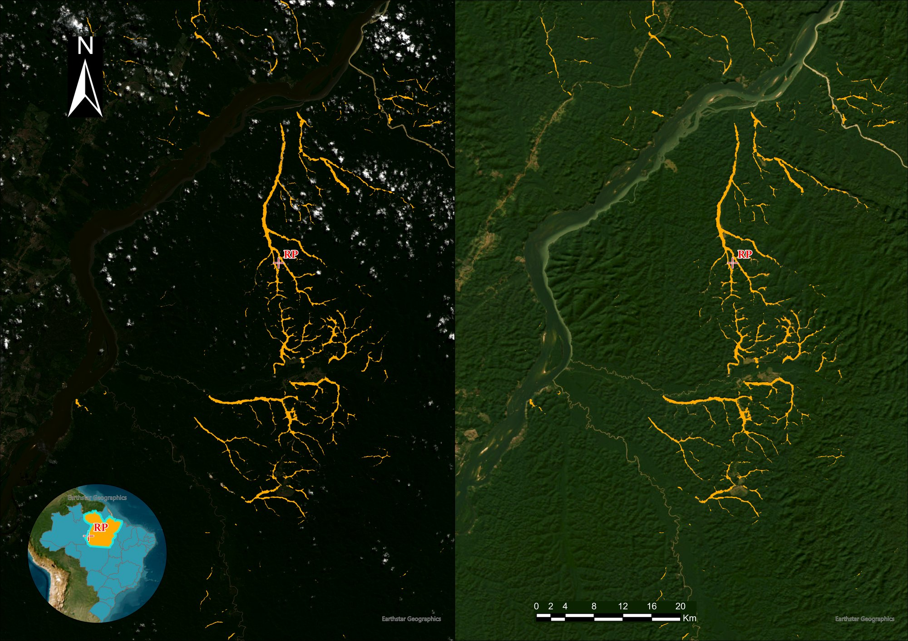
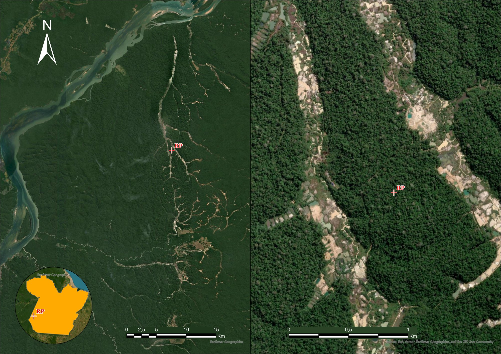

O Desafio: A fiscalização de garimpo ilegal na Bacia Amazônica sofre com a densa cobertura de nuvens e com a semelhança de cavas abertas com bancos de areia fluviais naturais.
A Solução Tecnológica:
Carregamento das bandas do Sentinel-1 (VV, VH) e Sentinel-2 (B2, B3, B4, B8, B11) via STAC API do Microsoft Planetary Computer.
Corte da área de interesse sob demanda via gdal.Warp utilizando canais cloud-native (vsicurl) para evitar arquivos temporários massivos.
Limpeza de ruídos no MapBiomas (Classe 30 - Garimpo) usando reclassificações automatizadas e similaridade espacial (DINOv2) para obter contornos exatos.
Geração de 1.946 pares de chips de imagens/máscaras no tamanho 512x512 pixels para preservar a estrutura geográfica das cavas de garimpo.
| Banda / Canal | Assinatura Detectada (Alvo) |
|---|---|
| B11 (SWIR) | Altíssima Reflectância |
| B4 (Vermelho) | Média-Alta (Solo Exposto) |
| VV (SAR Radar) | Alta Rugosidade (Cavas) |
| VH (SAR Radar) | Espalhamento Volumétrico Baixo |
O ecossistema montado integra ferramentas de SIG desktop tradicionais a bibliotecas de processamento de dados espaciais de última geração.


Com o sucesso do **Novo Modelo UTM**, o pipeline de detecção de garimpo atingiu maturidade operacional, eliminando distorções de escala e melhorando a assertividade no ArcGIS Pro: